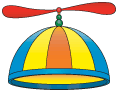

<DOCTYPE html>
<html lang='en'>
  <head>
    <title>Propeller Serial Server</title>
    <meta charset='utf-8'>
    <style type='text/css'>
        body
        {
            background-color:#FFFFFF;
        }
        #headingdiv
        {
            margin-left: auto;
            margin-right: auto;
            margin-bottom: 10px;
            border:4px solid #0020A0;
            background-color:#FFFFFF;
            width:800px;
            border-radius:20px;
            overflow:hidden;

        }
        #msgdiv
        {
            margin-left: auto;
            margin-right: auto;
            border:4px solid #0020A0;
            padding: 20px;
            background-color:#004000;
            width:760px;
            height:400px;
            border-radius:20px;
            overflow:hidden;
        }
    </style>
    <script src="http://cdn.alloyui.com/2.0.0pr4/aui/aui-min.js"></script>
    <script src="/socket.io/socket.io.js"></script>
    <script>
        YUI().ready(function(A) {
            YUI().use('node', 'transition', function (Y) {
                Y.one('.aui-btn').on('click', function() {
                    this.transition(
                        {
                            width: '500px'
                        });
                });
            });
            
            // Websockets
            var chatUrl = 'http://propeller-node.zicog.c9.io/chat';
            var newsUrl = 'http://propeller-node.zicog.c9.io/news';

            var chat = io.connect(chatUrl);
            var news = io.connect(newsUrl);

            chat.on('connect', function () {
                console.log('Chat connected');
                chat.emit('hi!');

                chat.on('chat message', function (data) {
                    console.log('Chat:', data);
                    chat.emit('hi!');
                });

                news.on('connect', function () {
                    console.log('Chat connected');
                });

                news.on('item', function (data) {
                    console.log('news item:', data);
                    news.emit('woot');
                });
            });
        });
    </script>

     
  </head>
  <body>
    <div id='headingdiv'>
        <h1>Propeller Serial Server</h1>
         
    </div>

    <div style="text-align: center;">
        <button id="try-btn" class="aui-btn aui-btn-large aui-btn-block aui-btn-primary" type="button">Press me</button>
    </div>


    <div id='msgdiv'><p id='message'>Propeller messages go here.</p></div>

    <a href="serial-buffer">View the raw serial input buffer</a> 
</body>
</html>


